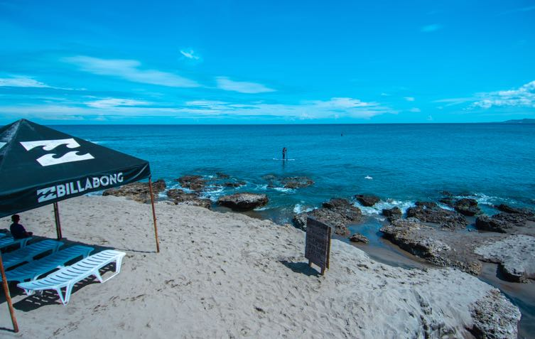
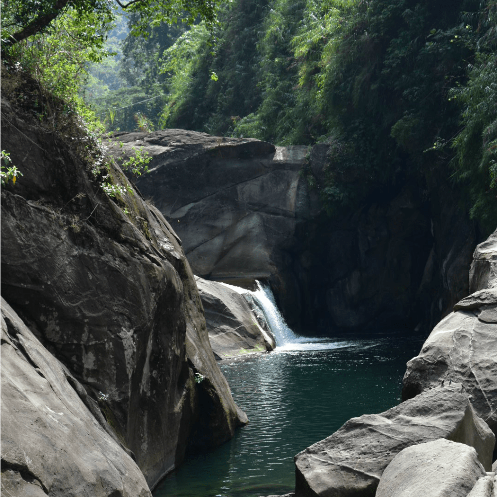
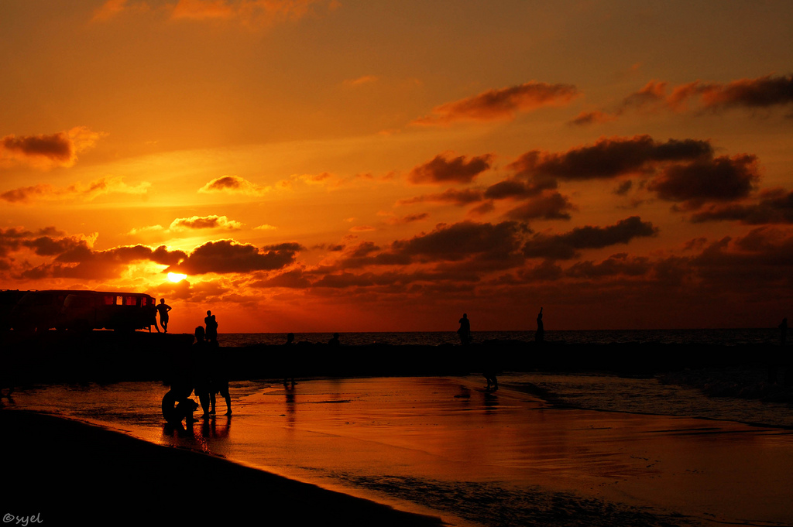
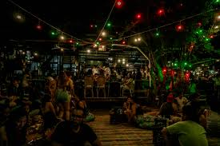
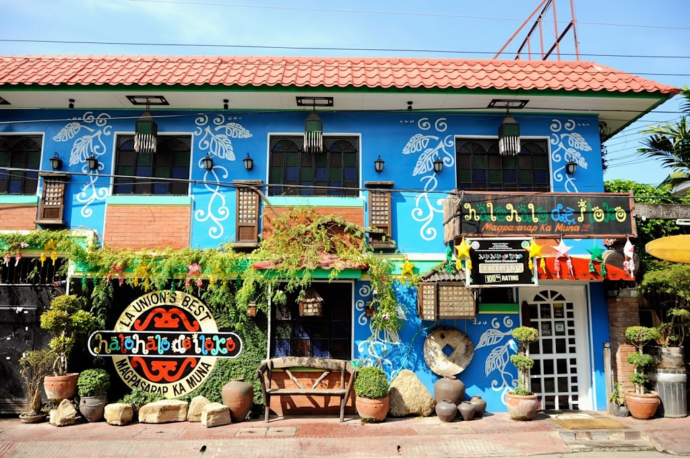
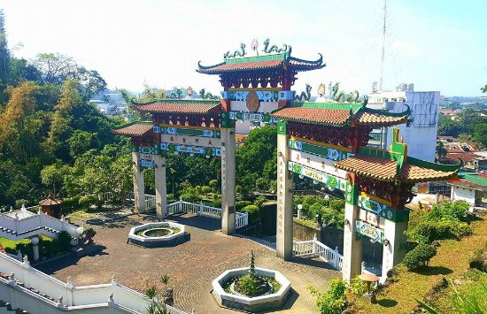
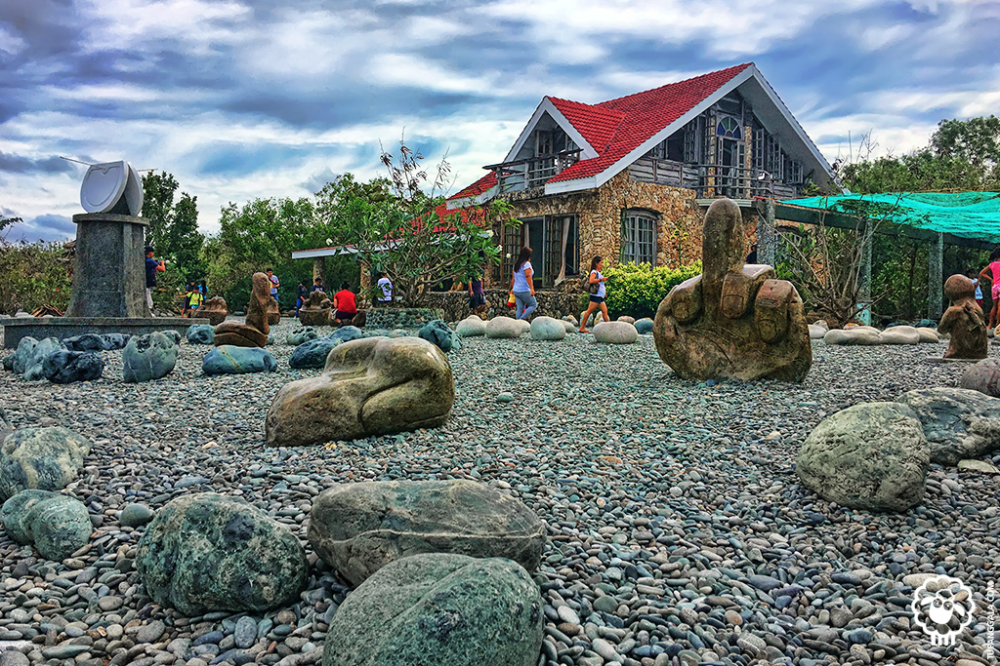
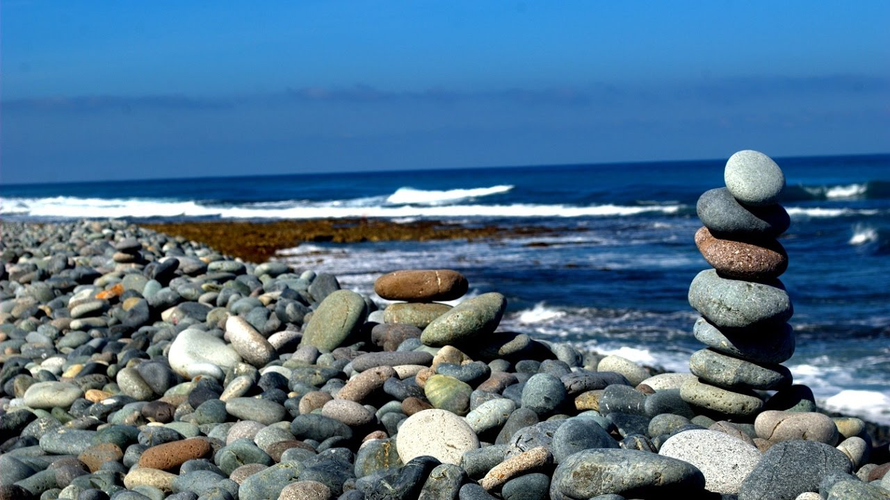
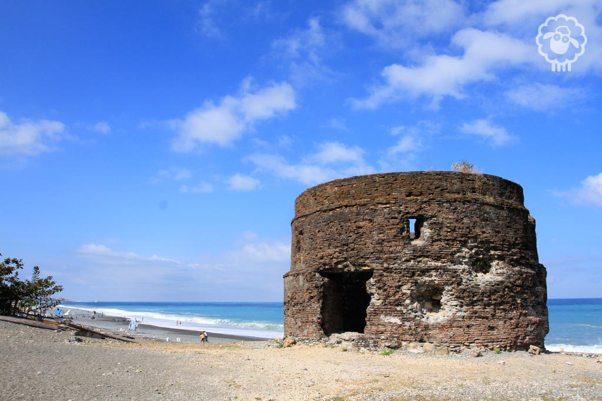

-
1)Surf in San Juan
La Union is home to nearest surfing spots from Manila. Aside from good swells, this is one of the reasons why it had become a popular destination for avid surfers and people who want to learn the sport. Urbiztondo Beach in San Juan is the most popular surfing spot and main tourist area. In contrast to other beaches in the Philippines, its peak season starts in October until March when the best waves arrive. Looking for other spots to surf? You can also find alternative surf spots nearby including Bacnotan, Darigayos, Taboc,and Jesus Point in Carilla.
-
2) Tangadan Falls cliff diving
Take a break from the surf and enjoy a dip at Tangadan Falls. This waterfall in San Gabriel is an easy day trip from San Juan. Tangadan Falls has a spacious plunge pool that is perfect for swimming. You can ride a bamboo raft to the main cascade and enjoy a cool waterfalls shower massage. Nearby, you can find two smaller waterfalls that are popular for cliff diving. One is located on the upper level, upstream, and the other is farther downstream.
-
3) La Union sunset
La Union’s coastline is blessed with glorious sunset views including Urbiztondo Beach. Go to the rocky area on the south side of the beach for dramatic views.
-
4) Food trip & nightlife in Urbiztondo
The rise of San Juan as a popular beach getaway near Manila attracts a steady crowd of Millenials. Urbiztondo had grown a bit of a hipster feel to it. Don’t miss the Instagram and tummy-worthy food scene. Then, cap the night off with drinks at many beach and roadside bars. My personal favorite places to eat/drink are Olas Banditos (Mexican), Mad Monkeys (Burgers), Surf Shack (Restobar) and Tagpuan (Affordable meals).
-
5) Halo Halo de Iloko
The food scene is exciting as well in San Fernando, the capital city of La Union. Getting there only takes 20 minutes, it’s a shame if you miss it. The most popular place to eat here is Halo Halo de Iloko, located along Zandueta Street. They sell Halo Halo with a tasty twist. Try the Buko Halo Halo, Ginataan nga Halo Halo or Deep Fried Halo Halo. They also serve delicious Ilokano-fusion dishes. You might have to queue a bit before getting a table since the restaurant is almost always full. The wait is worth it.
-
6) Ma-Cho Temple
While you are in San Fernando, stop over at Ma-Cho Temple, a picturesque temple found on top a hill. It is the first Taoist temple and only one in the Philippines that is dedicated to the Chinese sea-goddess Mazu. Some of its interesting features include the towering main building crowned by an unusual spider-type dome, the Majestic Five Door Gate, and interiors filled with ancient Chinese decorations. As you can imagine, a lot of people come here to get a selfie with the sign “Macho.”
-
7) Thunderbird Resorts Poro Point
Seeking a luxurious stay or romantic dinner? Go to Thunderbird Resorts Poro Point in San Fernando. This Santorini-inspired resort is famous not only for its imposing white-washed buildings and blue domes. It’s also praised for its gorgeous cliff-top location, facing a serene sunset view of the West Philippine Sea.
-
8) Bahay Na Bato
From San Juan, head north to the town of Luna and check out Bahay Na Bato, the newest tourist attraction in the province. Built from stones found along Luna’s rare pebbled beaches, the rest house sits on a peaceful property owned by Dr. Edison and Dr. Purita Chan-Noble. In the interiors and around the grounds, you can find many interesting stone and wooden sculptures made by Korean artist, Bong Kim. The artistic feel of the place reminded me a lot of the Black Houses in Chiang Rai, Thailand.
-
9) Luna Pebble Beach
On the beachfront of Bahay Na Bato, you can find the most beautiful pebble beach that remains in Luna. This section of the coastline is surrounded by vibrant blue waters and strong sea waves. The town is known as the Pebble Capital of the North because of its many pebbled beaches and big stone-picking industry.
-
10) Luna Church and Baluarte
Visit some of Luna’s remaining heritage sites. The St. Catherine of Alexandria Parish, also called The Shrine of Our Lady of Namacpacan or Namacpacan Church, stands beside the town plaza. This Spanish-colonial church was built in 1690. It is one of the grandest churches in the province. It is listed as a National Cultural Treasure by the National Museum of the Philippines. A few hundred meters away, the Luna Baluarte or Watchtower stands along a pebbled beach. The watchtower served as a fortress that was used by Spanish colonizers to warn residents of pirate attacks.
-
11) La Union grape farms & fruit picking

Before leaving La Union, drop by the grape farms in Bauang. You can go grape-picking here and bring the fresh harvest as pasalubong. Grape farms in the country are a surprising discovery for most Filipinos because we have a notion that this fruit can only grow in cold weather. There are numerous grape farms in town and many of them are open to the public.
FindThatSpot
Here are the top 11 Tourist spot and some beautiful places to go of La union of 2019!


Visit us on Facebook!
Come and witness the different places of La Union.

Join us on Discord!
Dont be afraid and tell us your suggestion! Let us know what you think!

Follow us on Instagram!
Follow us and support us as we bring more beautiful places of La Uion!